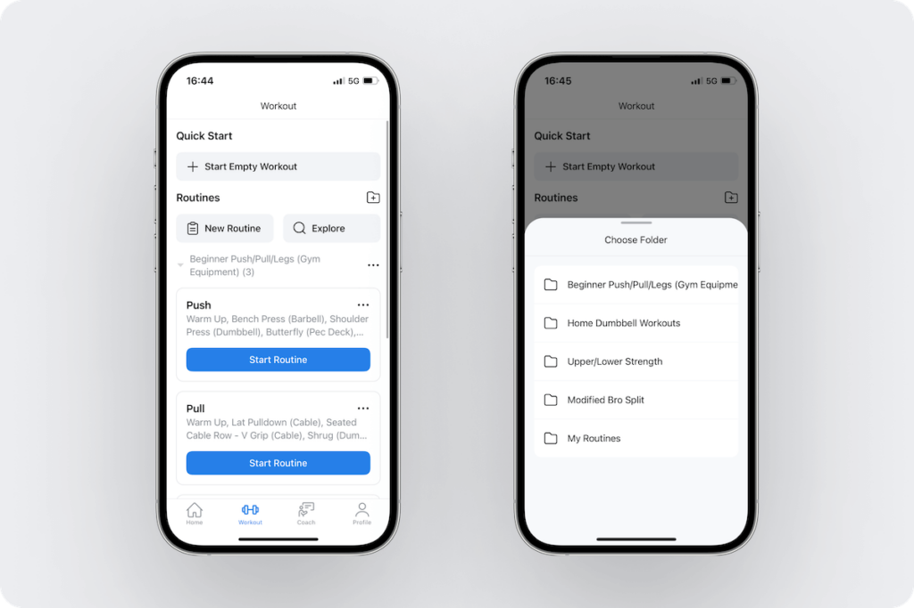
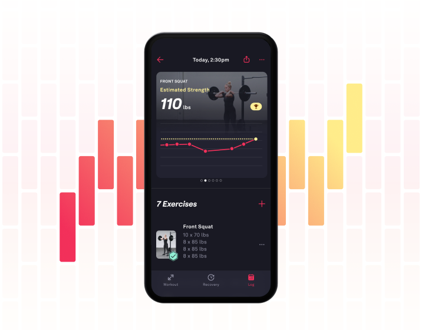
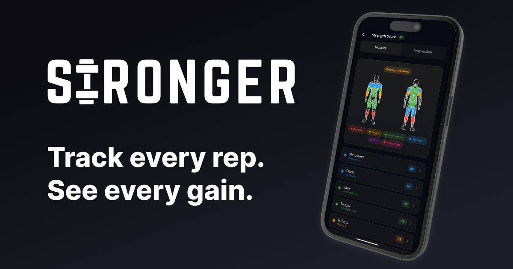

Quick References: Workout Logging
최고의 기록 화면은 AI 점수보다 원본 숫자를 먼저 보여준다. 운동 중에는 세트 입력을 최소화하고, 운동 후에는 운동별 세트 수·최고 중량·총 볼륨·PR을 분리해 읽게 한다.
적용할 패턴
- 입력: 이전 기록을 옅게 보여주고 kg/reps만 바로 수정한 뒤 한 번에 완료.
- 요약: “스쿼트 4세트 · 최고 60kg · 총 1,760kg”처럼 raw data를 한 줄로 압축.
- 기록: 최고 중량, 추정 1RM, 최고 세트 볼륨, 세션 총 볼륨을 서로 다른 기록으로 취급.
- AI: 숫자를 덮는 별도 점수가 아니라, 기록 아래에서 다음 중량의 이유만 설명.
References
1. 루틴 시작은 짧고 명확하게

2. 기록과 성과는 같은 화면에서

3. 요약 점수는 raw data 다음에

FIRST REP 적용 스케치
BENCH PRESS 4 SETS 지난번 최고 57.5kg 오늘 목표 60kg SET PREVIOUS KG REPS DONE 1 55 × 8 [55] [ 8 ] ✓ 2 57.5 × 6 [57.5] [ 6 ] ✓ 3 57.5 × 6 [60] [ 5 ] ○ 4 55 × 8 [55] [ 8 ] ○ 오늘 최고 57.5kg · 총 볼륨 1,915kg · PR 없음